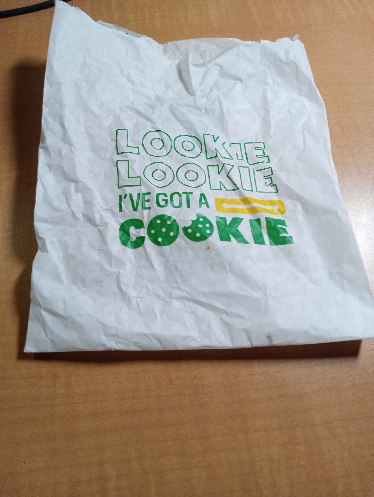

Subway is genuinely the best place to eat on campus. No, I haven't eaten everywhere, but for the price, it is the greatest bang for your buck. Sure, you COULD eat at Chick-fil-a, but you get MUCH less actual *food* there for the same price. A 12 inch sandwich from Subway is ONLY about 10 bucks, not to mention the cookies. The cookies are half of the appeal. Please be careful when ordering cookies on GrubHub, as they can be forgotten. CHECK YOUR BAGS. To sum up, if you haven't been to a subway on campus, try it out. Reliable good cheap food that's open late.
Subway
10-16-2025
